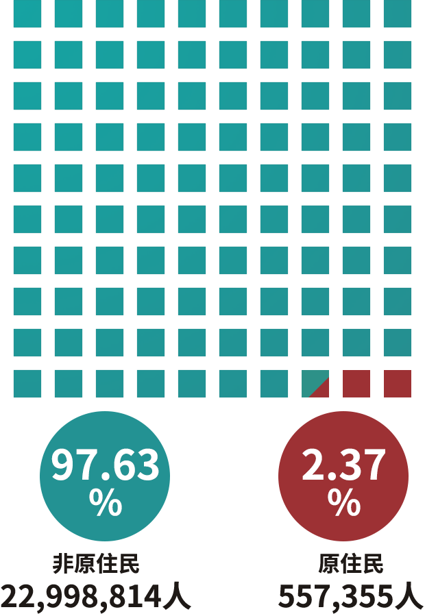
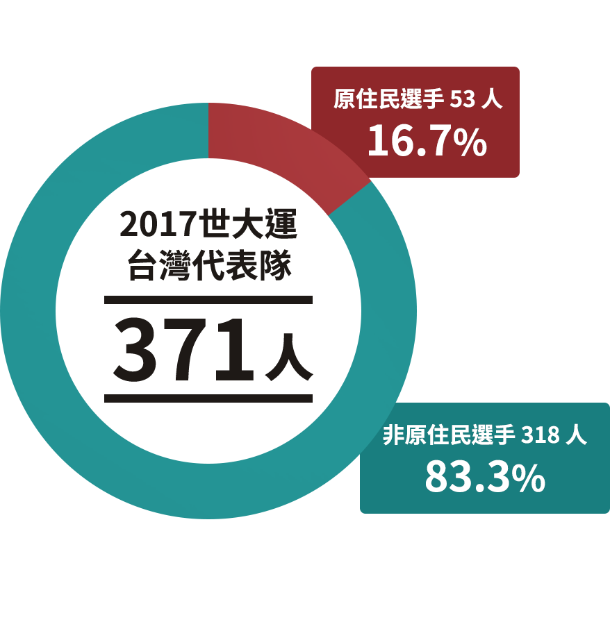
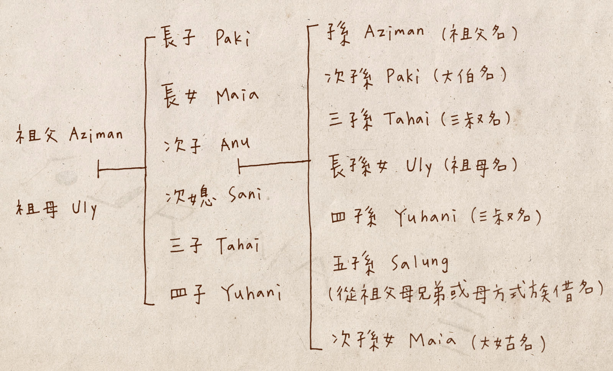

沒有名字的人
八月底，台北世界大學運動會在台灣代表隊優異的成績下風光落幕。撇開台灣每次在各種國際場合都會祭出的原住民歌舞表演，這次的賽場上，台灣原住民(註)朋友們的表現仍然十分搶眼。例如舉重選手郭婞淳和陳士杰、田徑選手楊俊瀚和陳傑、女籃球員陳晏宇和羅蘋等人，相信大家都還能記得他們在賽場上的精彩表現。
註本文所稱的原住民範圍，暫且設定在已獲政府認證的 16 族，仍未獲得身份認定的族群則至少還有 11 族，由於資料龐雜且認定困難，在此僅先就 16 族進行報導，懇請見諒。
根據原民會統計，在此次台灣代表隊總共 371 名選手中，有 53 名原住民選手（其中 32 名為阿美族），佔總數約 16.7% 。不只參賽人數眾多，原住民代表奪牌的也多。此次原住民選手直接或間接（團隊）為台灣拿下的獎牌數共 11 面，佔總數 12%。以台灣原住民總人口數約 55.7 萬人計算，約只佔台灣人口 1/42 （2.37%）來看，原住民朋友的「貢獻度」可見一般。
台灣原住民佔總人口比例
台灣原住民選手佔世大運代表隊比例
值得注意的一點在於，此次世大運為數眾多的原住民選手中，沒‧有‧任‧何‧選‧手使用原住民族名參賽。為什麼？事實上，不僅這次的世大運有這樣的現象，就算是被台灣視為「國球」的棒球運動也是ㄧ樣。根據中華職棒與原住民棒球協會統計數據，2017 年賽季中，有 38.7% 是原住民選手，比例非常高。然而，在 2011 年賽季陳鏞基（Mayaw Ciru）、林智勝（Ngayaw Ake）等人率先改穿印上他們族名的球服之前，中華職棒選手是 100% 使用漢名出賽。
原住民佔中華職棒選手比例
退一步來說，以台灣佔絕大多數的閩、客、漢族群來說，在不刻意搜尋資料的情況下，一般人可以立刻叫出多少原住民朋友的族名呢？答案恐怕不多。
然而，這未必是漢人的問題，也未必是原住民朋友的問題。要回答這個問題，恐怕得從歷史談起。
一場關於名字的抗爭
1945 年，國民政府接收台灣，隔年 5 月 6 日頒布《修正台灣省人民回復原有姓名辦法》，並強制要求原住民在 3 個月內改用漢姓、漢名。幾千年來，原住民第一次被強制以一個連自己也感到陌生的名字生活。
1984 年，台灣原住民族權利促進會發起正名運動，除了要求政府修正「山地同胞」用法外，也希望能在正式的身分證明文件上恢復自己的名字。 1995 年，立法院通過《姓名條例》修正案，原住民終於可以在身分證上登記自己的族名，但由於變更姓名意味戶籍、駕照、銀行帳號等相關證件必須一併更換，且必須以漢字拼寫，又有字數限制，加上主流社會普遍不了解原住民姓名等阻礙， 20 年過後的今天，原住民恢復族名登記的比例始終不高。
根據內政部統計資料，截至 2017 年 8 月為止，在身分證上恢復族名登記的原住民總數，僅有約 2.9 萬人，佔原住民人口總數約 5.25 %。而在這 2.9 萬人中，更僅有 4,265 人完全揚棄漢名，僅登記原本族名，佔原住民人口總數約 0.77 %。
換句話說，政府開放原住民恢復族名登記 22 年來，僅有 0.77% 的原住民完全捨棄漢名，只用族名生活。
原住民恢復姓名登記總數及比例

註恢復族名後，再度改回漢姓名者總數為 465 人。資料來源，內政部戶政司；2017 / 08
還我名字談何容易
但，我們真的可以說這是正名運動的失敗嗎？有沒有可能是登記程序太困難，而導致原住民意興闌珊？又或者是整個社會對於原住民的不友善，才導致他們不願意恢復族名？
2017 年 6 月 14 日，《原住民族語言發展法》公告施行，16 族原住民語言也被視為「國語」的一部分，不只正式公文書上可以使用原住民語言，就連身分證上使用的姓名，也不強制一定要使用漢字拼寫了。只是，這真的可以改變什麼嗎？
以下，我們將分階段介紹各族族名命名規則，還有各族在恢復族名時的不同考量，讓大家知道「還我名字」這麼簡單的心願，究竟有多麼複雜。
小遊戲讓你了解命名規則
撇開正式文書上的登記問題來看，光是嘗試了解，甚至進一步去熟悉各族的命名文化，也是原住民轉型正義的一環。透過對於不同命名文化的了解，我們甚至也能以此為契機，進一步去了解我們身邊的原住民朋友，還有他們的文化。
以下，我們將透過 5 個簡單的問答小遊戲，測驗大家能猜出幾個原住民名人的族名。不要害羞也不要害怕，一起來玩看看吧，看看你能答對幾題！答錯也沒有關係，我們一定會讓您有所收穫的唷！
繼陳金鋒、王建民、郭泓志、胡金龍等人之後，近期在美國職棒大聯盟最耀眼的台灣球員，非林子偉莫屬了。林子偉是來自高雄那瑪夏鄉的布農族，猜猜看下列哪一個是他的本名吧！
期待，卻也受傷害
1995 年，《姓名條例》第 3 次修正，讓原住民終於得已用漢字拼寫登記族名，不再強制使用漢名。然而，這個修正並無法滿足原住民需求；許多人認為，漢字音譯無法忠實還原他們名字的發音，就算照著漢字音譯唸出來，也未必聽得出是在叫自己，所以「恢復族名登記率」一直不高。
問題在於，早在 2003 年《姓名條例》第 5 次修正時，政府就讓原住民得以在漢名（或漢字音譯族名）一旁加註採用羅馬拼音的族名。這樣的舉措雖然確實提升了原住民恢復登記族名的意願，但至今將近 15 年過去，恢復登記率仍然不到 6%。
根據內政部統計資料，截至 2017 年 8 月為止，在身分證上恢復族名登記的原住民總數，僅有約 2.9 萬人，佔總數約 5.25 %。而在這 2.9 萬人中，更僅有 4,265 人完全揚棄漢名，僅登記原本族名，佔原住民人口總數約 0.77%。
換句話說，恢復族名之路走了超過 20 年了，但在 55 萬原住民當中，卻僅有不到 3 萬人選擇恢復族名。在上一個章節中，我們提到主流社會對於原住民族名的陌生，形成了他們恢復族名的阻力，畢竟每個人都想要自在、便利的生活，更沒有人願意遭受歧視。問題在於，登記制度確實仍存在許多問題，讓許多期待恢復族名的人卻步，這也是事實。
為何原住民仍在用漢名？
2013 年，原民會委託政大原住民族研究中心進行「原民族傳統名字恢復登記」研究案，除了希望能全面性地了解原住民不願恢復登記的考量外，也期待能落實解決問題，讓原住民更願意恢復族名生活，藉此重振文化復興，也讓漢族進一步了解原住民文化。研究團隊因此陸續針對 16 族召開 25 場公聽會，了解各族在不同命名規則等考量下，面對的問題究竟是什麼，才讓他們至今仍對恢復族名卻步。
根據這 25 場公聽會側記結果，加上研究團隊所撰寫的分析文章，各族原住民的主要考量大致如下：
- 重名問題：
受到傳統文化沒落影響，加上某些民族原有名字就不多，排列組合後還是容易發生人名重複的狀況，降低個人辨識度，但採用漢名後，人名的組合可謂「千變萬化」，比較不會發生重名問題，所以許多人認為應該在一定程度上保留漢名，並且和族名並列登記。 - 傳統文化與語言沒落：
部分族群面臨嚴重的文化保存問題，加上許多族人遷移到城市工作生活，早就脫離部落，對於傳統語言掌握度低，甚至也搞不清自己原有的氏族名、家屋名（註：排灣、魯凱、卑南族採家屋名制，和家族名概念不同。），所以即便有意願恢復登記，也擔心「取錯名字」，一直沒有採取行動。此外，除了「取錯名字」的考量外，逾越傳統文化並「亂取名字」的現象，也是部分族群考量的重點。 - 拼音方式的限制：
因政府強制原住民必須採用漢字音譯方式登錄族名，造成族人不滿，認為和羅馬拼音相較之下，漢字唸起來就是和他們族名不像，所以寧可不登記恢復族名。雖然政府早已開放以註記方式，登錄羅馬拼音族名，但仍然會影響原住民登錄意願。另外，無論用漢字或羅馬拼音方式拼寫族名，是否要有統一拼寫方式，仍未有共識。 - 行政程序複雜、規則限制多：
辦理恢復族名登記業務時，許多人經常碰到承辦人員不熟悉相關業務，或無法充分尊重族群命名規則文化的狀況。現在許多地方政府雖然有開設單一窗口簡便流程，但不是每個地方都有，或能落實簡化程序。另，姓名登記有字數限制，雖然已經從早期 6 個字陸續放寬到現在 20 個字，但仍然會遇到無法完整登錄族名的狀況，導致原住民產生「不乾不脆，不如不要」的心態，放棄登錄。 - 倫理與通婚考量：
由於多數原住民族群都沒有「姓」的概念，光看名字根本無法辨別雙方是否出自同一家族，也無法掌握親等，很容易發生近親通婚問題，也不容易凝聚家族向心力，所以傾向保留漢姓，這樣也比較好建立家族族譜。然而，也有族群（如撒奇萊雅族）提出主動「創姓」方式解決問題。 - 登錄方式差異：
各族由於命名規則不同，難以要求用統一格式登錄，這是很容易想像的狀況。問題在於，即便是同一族群，傾向的登錄方式可能也不一樣。以布農族為例，有些家族傾向把氏族名登錄在個人名前面，有些則認為傳統上應該放在後面。此外，對於氏族應該登錄到哪個階層，也是仍需討論的點。 - 拋不下漢名：
雖然多數原住民，都是因為政策緣故而被強制取漢名，但有人認為這個漢名無論如何也陪自己度過大部分人生，換掉會捨不得。另，除卻情感因素，許多人的漢名已經被外界接納，或許也已經建立一定程度的成就或外界信任，如果貿然改名，可能會對生活、事業造成全面性影響。 - 賽夏、邵、鄒、卡那卡那富、拉阿魯哇、阿美、泰雅、賽德克、太魯閣、噶瑪蘭族，均傾向「漢名 + 羅馬拼音族名」的並列登記方式。這樣的方式，比起「羅馬拼音族名 ＋ 漢字拼音族名」並列方式，來得更加受到歡迎。從這樣的結果，可以窺見保留漢名仍是主流意見。
上述所列 8 點，加上漢人社會普遍仍對族名陌生，若一個原住民完全捨棄漢名，在生活上會處處受限的事實，很可能就是原住民恢復族名登記率仍低的原因。雖然政府宣告將原住民語言納入國家語言，可能會讓他們在處理正式公文件時採用族名，會變得方便一些，但改變需要整體社會的提升，也需要原住民族群內部有更強的共識，無法一蹴而就。
偏有人要固執地記著
雖然本專題用了不少篇幅在談原住民恢復族名登記的比例很低，但我們在此想特別強調的是，我們並不認為非得要恢復登記族名才是「愛傳統」的表現，也不認為絕大多數沒有恢復登記族名的原住民朋友們，就是「忘本」、「不愛族」的表現。
事實上，我們更想凸顯的，一方面是台灣雖然經常自稱是多元族群融合社會，但主流（漢人）社會其實對原住民傳統文化所知甚少，也非常陌生，才希望藉「名字」這個每個人每天都要面對的問題出發，探討這樣的議題。
光就恢復登記族名問題而言，我們希望呈現的，其一是來自漢人社會因陌生而產生的「阻力」，其二則是各族內部因缺乏共識而導致「推力不足」，所以才會造成目前的局面。這其中，不管於內於外，各有不同層次的問題需要進一步梳理；等問題更加明晰後，才能由整個社會一起來推動真正的多元與共存。沒有真正的彼此認識，深切讓每個人都能回答「我是誰」這個最基本的提問，就不可能片面地解決共存的問題。
如同《請問芳名》系列紀錄片導演 Mayaw Biho 所言，在族名登錄的問題上，真正的關鍵其實並不在行政程序的繁瑣與限制，也不在恢復登記的人數和比例。他認為真正的問題在於：「你平常到底是怎麼讓人認識你的？怎麼稱呼自己？怎麼讓別人知道你來自哪裡，你的文化又是什麼？」「有人恢復登記（族名）後，平常使用的還是漢名。也有人到現在還是沒去登記，但你只會知道他的族名，完全沒聽過他的漢名。這樣的話，你能分辨誰比誰更原住民嗎？名字的問題⋯⋯是你願不願意去用。」
而「用」，就是生活。
但，在此之前，原住民族面臨更迫切的問題，恐怕是記憶。在此，我們想引用一名年輕的馬卡道族人陳以箴所寫的文字，為這個專題劃下句點。她說：
「族裔其實沒有想像中重要，卻比想像中重要。重要的不是你如何被歸類，而是你如何回應召喚、你如何選擇和實踐要成為誰。現在有人問我是不是原住民，我都還未必反應的過來。然而，這是無數場記憶與遺忘的鬥爭，雖然有點晚了，偏有人要固執地記著。」
延伸閱讀：各族命名規則完整說明
前言
台灣各族原住民命名規則雖各有千秋，但大致可分以下 5 大系統
一、親子連名制
- 阿美族（Pangcah）：個人名 + 親名（以母親為主）
- 噶瑪蘭族：個人名 + 親名（以父親為主）
- 泰雅族：個人名 + 親名（以父親為主）
- 賽德克族：個人名 + 親名（以父親為主）
- 太魯閣族：個人名 + 親名（以父親為主）
二、親子連名 + 氏族名制
- 賽夏族：個人名 + 親名（以父親為主）+ 氏族名
- 阿美族（Amis）：個人名 + 親名（以母親為主）+ 氏族名
- 撒奇萊雅族：個人名 + 親名（以父親為主）+ 氏族名
三、氏族名制
- 布農族：個人名 + 家族名（或中氏族名）+ 氏族名
- 鄒族：個人名 + 氏族名
- 卡那卡那富族：個人名 + 氏族名
- 拉阿魯哇族：個人名 + 氏族名
- 邵族：個人名 + 氏族名
四、家屋名制
- 排灣族：個人名 + 家屋名（長嗣繼承為主）
- 魯凱族：個人名 + 家屋名（長男繼承為主）
- 卑南族：個人名 + 家屋名（長女繼承為主）
五、親從子名制
- 達悟 / 雅美族：稱謂 + 長嗣名
需要特別說明的是，有些家庭可能有特別考量，或者同樣的族群，在不同部落、區域間會有所差異，所以以上的分類與命名規則只是「一般來說」，並非一定如此。
舉例來說，雖然布農族的命名規則是「個人名 + 家族名（或中氏族名） + 氏族名」，但高雄伊斯坦大（Istanda）氏族就曾經召開家族會議，決議將氏族名作為類似「姓」使用，放到個人名前面，這樣做也比較容易讓漢人理解。又如來自台東武陵部落的布農族歌手王宏恩，他所使用的族名是Biung Sauhluman Tankisia Takisvislainan Tak-Banuaz，結構是「個人名 ＋ 父親名 + 母親名 ＋ 社群名」。簡言之，只要家族或部落可以取得共識，或者個人有比較不同的考量，命名的規則並非鐵律。
以下為各族命名規則說明。
阿美族
阿美族的命名規則，是「個人名 + 親名」。由於阿美族是母系社會，傳統上親名以母親名字為主，但也可使用父親或祖父母輩的名字，甚至父母親名都用的情況也有。
除了上述的命名規則外，部分阿美族人，還會在名字中放入氏族名。知名歌手 A-Lin 的本名是Lisang Pacidal Koyouan，中間的 Pacidal 就是她的氏族名，意思是太陽。
雖然外界統稱為「阿美族」，但其實阿美族又可分為 Pangcah 與 Amis。Amis為卑南語，原意為「北方的人」，所以台東的阿美族多自稱Amis，這是受到卑南族的影響。至於花蓮、北部的阿美族人，則多半自稱為Pangcah。
布農族
布農族（Bunun）的命名規則，是「個人名 + 家族名（或稱中、小氏族名） + 氏族名」。一般來說，不可以直呼一個布農族人的全名，彼此間只會以個人名或小名互稱，直呼全名被視為一種禁忌或不禮貌的行為。
布農族的家族與氏族名，標記了每個人的血統從何而來。除此之外，「個人名」也有命名規則，通常不是興之所至就能任意取的。布農族的個人名採「襲名制」，長子與長女，通常會繼承祖父、祖母的名字，至於其他子女，則會按順序繼承父親手足的名字。
布農族的襲名制度，象徵誌念先人的心意。然而，假如某個先人死得並不光彩，那麼他的名字也有可能不被繼承喔！
布農族襲名制示意圖：

泰雅族
泰雅族的命名規則，是「個人名 ＋ 親名」，而泰雅族的親名通常選用父親的名字，有特殊狀況時，才會選用母親。換句話說，從一個泰雅族人的全名，我們就能得知對方家長的名字。
排灣族
排灣族的命名規則，是「個人名 + 家屋名」。傳統上只有長嗣（vusam，原意為種子，不分男女）可以繼承家屋名，餘嗣在成年另組家庭後，應該再取一個新的家屋名。不過現在許多人在離開原生家庭後，會沿用家屋名，有點像是把家屋名當成漢人的「姓氏」在使用的意味；一部分人認為這是傳統的崩壞。
排灣族傳統上，以「第一個見到太陽的人」為首，所以出生在頭目家族的長嗣，無論男女都可能繼承頭目身份，被視為台灣性別最平等的原住民族。
排灣族是階層社會，分為「貴族」（mamazangilan）、「中間氏族」（puqalu）及「平民」（atitan）三個階級。階級是世襲的，但彼此共同生活，所以個人階級會隨通婚改變。由於階層制度的存在，所以不論是個人與家屋名，都可以看出一個人的階層。倘若一個平民取了貴族的名字，可能會觸犯禁忌（palisi），反之亦然，所以任何人在命名時，都需要考量到他們自己的階層，還有與長輩之間的關聯。
如果不是長嗣的話，在結婚以前不需要繼承家屋名，結婚後長輩會依照通婚雙方的階層，給予適合的家屋名。舉例來說，平民與貴族通婚後，長輩可能會賦予他們合適的中間氏族家屋名。同一個名字在不同部落、區域或族群中，可能會對應到不同階層。例如有些名字在排灣與魯凱族中都會使用，但會對應到不同階層，這可能與後來不同的文化變遷有關。在過去，一個部落就形同一個國家，所以即便都是同一個族群，不同部落的命名、階層文化也會有差異。
傳統文化的逐漸沒落也影響到排灣族的命名文化，根據政大原住民研究中心的田野訪調發現，目前許多家長在為子女命名時，如果雙親中有貴族階層血統，或家族中曾與貴族階層通婚，就傾向將貴族家屋名放進子女名字中，長久以後，造成「舉世皆貴族，放眼無平民」的現象，也會造成平民階層家屋名消失。
魯凱族
魯凱族的命名規則，是「個人名 + 家屋名」，傳統上只有長子可以繼承家屋名，餘嗣在成年另組家庭後，應該再取一個新的家屋名。不過現在許多人在離開原生家庭後，會沿用家屋名，有點像是把家屋名當成漢人的「姓氏」在使用的意味；一部分人認為這是傳統的崩壞。
魯凱族和排灣族都有階層制度，命名文化也類似。差別在於，排灣族通常是由長嗣（第一個孩子）繼承家屋名，而魯凱族通常是由長子繼承，不過隨著各區域有所差異，例如東魯凱、西魯凱、下三社群的規範、名稱都有程度不一的區別。
魯凱族的個人名，也有從祖父輩襲名的習俗。和排灣族不同的是，排灣族在直系親屬中，通常不會承襲還在世親屬的名字，而魯凱族相對不這麼忌諱。
魯凱族是階層社會，主要分為「貴族」與「平民」階層，有些區域則加入中間階層。階級是世襲的，但彼此共同生活，所以個人階級會隨通婚改變。由於階層制度的存在，所以不論是個人與家屋名，都可以看出一個人的階層。倘若一個平民取了貴族的名字，可能會觸犯禁忌，反之亦然，所以任何人在命名時，都需要考量到他們自己的階層，還有與長輩之間的關聯。
如果不是長子的話，在結婚以前不需要繼承家屋名，結婚後長輩會依照通婚雙方的階層，給予適合的家屋名。舉例來說，平民與貴族通婚後，長輩可能會賦予他們合適的中間氏族家屋名，或者看情況繼承貴族、頭目家族的家名。魯凱族有句俗話說，「沒有永遠的平民，但有永遠的頭目」，就是跟通婚與繼承名字的文化有關。然而，當代的問題在於，由於通婚造成階層流動，還有目前大家未必嚴守傳統，所以造成「舉世皆貴族，放眼無平民」的現象，因為大家都熱愛取用貴族階層的名字和家屋名。
同一個名字在不同部落、區域或族群中，可能會對應到不同階層。例如有些名字在排灣與魯凱族中都會使用，但會對應到不同階層，這可能與後來不同的文化變遷有關。關鍵在於，過去一個部落就形同一個國家，所以即便都是同一個族群，不同部落的命名、階層文化也會有差異。
和排灣族相似的是，目前魯凱族也有平民階層家屋名逐漸消逝的問題。
卑南族
卑南族的命名規則，是「個人名 + 家屋名」，傳統上通常會繼承母系的家屋名，孩子成年分家後，也會另外取新家屋名，但現在一般會沿用原本家屋名。
家屋名通常是根據居住地、特徵、職業所創造。例如 Tatiyam 意指做生意的店家、 Purburbuwan 指生火之地、 Kulungan 是堆滿染料的房子。
鄒族
鄒族的命名規則，是「個人名 + 氏族名」。氏族是由幾個家族聯合組成，有些有血緣關係，但也可以沒有。同一氏族不能通婚。
由於目前鄒族男性和女性各只有 11 個名字，容易出現同氏族也同名的情況，因此有些鄒族人的名字，會在氏族名後，再加上自己的出生地名，便於區隔辨識。鄒族的個人名命名沒有特別約束，但通常不會與父母兄弟同名。
鄒族的各氏族在改用漢姓時，都可以對應到特定的漢姓，因此在大多數狀況下，只要知道鄒族朋友的漢姓，就能反推回對方的氏族名，反之亦然。
特富野社五大家族與漢姓的對照，分別是：vayayana（頭目家族 peongsi 汪家）、niahosa（梁、陳、朱）、toskx（杜）、iskiana（石）、 yata’uyongana（高）
達邦社五大家族與漢姓的對照，分別是：tapangx（頭目家族peongsi 方家）、niauyongxana（吳）、yasiyongx（安）、yakumangxna（楊、洋、陽）、yoifoana（莊家、小莊家）
鄒族男性11個名字分別為：Atai、Avai、Fa’ei、Moeo、Pasuya、Uongu、Voyu、Yapasuyongx、Yaipuku、Tibusungu、Aicayx。
鄒族女性11個名字分別為：Apu’u、Paisx、Inguyu、Ku’atx、Motoyx、Naa’u、Sayungu、Tanivu、Yangui、Upi’i、’Akuanx。
邵族
邵族的命名規則，是「個人名 + 氏族名」，氏族名通常繼承自父系，個人名也有襲名制度，長男通常會繼承曾祖父的名字。
邵族的許多氏族名在轉換成漢姓時，和賽夏族類似，會從原名的「意義」轉換成漢字讀音。舉例來說，Stamarutaw原意為「高」，改成漢姓時就是高。Stanakjunan原意為「紅色」，改漢姓時就成為朱或丹。
賽夏族
賽夏族的命名規則，是「個人名 + 親名 + 氏族名」，親名一般以父親為主。賽夏族在改漢姓、漢名的過程中，有考量到原本氏族名的意義，再從漢字中找尋可以匹配的意義，所以從他們後來的漢姓中，就很容易回推原本的氏族名。
舉例來說，氏族名 Sawan 和 Kasames 都出自第六系 Sawan ，原意就是樹枝交錯、根的意思，所以漢性為「根」。又如 Botbotol 是狐狸的意思，因此漢姓為「狐」； Kaybaybaw 是高處的意思，因此漢姓為「高」； Sayna’ase 中的 sae 為九芎樹，因此漢姓為「芎」、「樟」； Tanohila 原意為太陽，因祖先射落烈日而得名，因此漢性為「日」。
除此之外，賽夏族還有一些蠻特別的漢姓，下次遇到有人擁有特殊姓氏時，不要再膝反射覺得對方是「外省仔」喔，說不定人家是賽夏族的朋友呢！
賽德克族
賽德克族的命名規則，是「個人名 + 親名」，親名以父親為主，但採用母親名也可以。至於個人名則會從祖父輩繼承。
從賽德克族人的名字中，可以看出家庭對他們的重要性，因為父母的名字，會緊緊跟隨（ tqune 或 smnegul ）在孩子名字的後面。
達悟 / 雅美族
達悟 / 雅美族的命名規則非常特殊，終其一生會隨著自己與家人的關係而有所變動。多數種族的命名系統中，經常都會繼承長輩的姓、家名、氏族名等，但達悟 / 雅美族則會根據子嗣的名字而改變，大體上就是「稱謂 + 長嗣名」。
以知名作家夏曼・藍波安為例，他的族名羅馬拼音為 Si aman Rapongan，而這其實已經是他過去的名字。Si aman Rapongan 本來的名字叫做 Si Cigewa，但他後來生了一個叫做 Si Rapongan 的兒子後，他的名字就會從 Si Cigewa 變成 Si aman Rapongan，而 Si aman 就是父親的意思。至於 Si Rapongan 的媽媽，也會改成 Si nan Rapongan，因為 Si nan 就是媽媽的意思。等到他們從父母變成祖父母後，名字還會再變動一次。規則同上，只是他們前面的稱號會改成 Si apen。
撒奇萊雅族
撒奇萊雅族的傳統命名規則，是「個人名 + 親名 + 家族名」，雖然撒奇萊雅屬於母系社會，但親名多半以父親為主。
清國統治時期時曾在台灣推動「開山撫番」政策，撒奇萊雅當時曾與噶瑪蘭族聯手和清兵對抗，後來發生「加禮宛事件」（或稱達故部灣Takoboan事件）事件，導致族中領導人物遭清國凌遲屠殺。為免發生滅族慘劇，撒奇萊雅族在該事件後，開始一段隱姓埋名的流浪旅途，後來被日本政府視為阿美族分支，在一定程度上導致該族傳統名字流失。
噶瑪蘭族
噶瑪蘭族的傳統命名規則，是「個人名 ＋ 親名」，而雖然他們在傳統上也是母系社會，但親名多半以父親為主。由於噶瑪蘭族屬於平埔族群，受到漢人影響時期較早也較深，再加上他們曾與撒奇萊雅族聯手抵抗清國統治，後來發生「加禮宛事件」後遭到鎮壓，導致傳統文化與名字流失嚴重，現在許多傳統名字多是由清國統治時期的土地契約文件中找出。
太魯閣族
太魯閣族的傳統命名規則，是「個人名 + 親名」，親名又以父親為主。不過親子連名制度很容易出現重名現象，為了解決此問題，目前許多族人傾向在恢復傳統姓名登記後，可以在親名後面增加「家族名」或祖父 / 母的名字，藉此增加區別度。
拉阿魯哇族
拉阿魯哇族的命名規則，是「個人名 ＋ 氏族名」。由於目前各族通婚的情況非常多，且拉阿魯哇族人數稀少，該族目前的普遍共識是，假如有外族女性嫁入拉阿魯哇族，會為她們取一個適合的傳統族名，藉此維持傳統姓名可以延續下去。
附錄：還我名字運動簡史
參考資料：原住民族人名譜PDF
參考資料：原教界第67期—原住民族的人名
延伸閱讀：「沒有名字的人」粉絲專頁
文字：鐘聖雄/片頭：許玲瑋、鐘聖雄、陳怡蒨/網頁製作：v_k、熊凱文
特別感謝：Panai Kusui、Nabu Husungan Istanda、Mayaw Biho、Yapasuyongu Akuyana、Tanivu’e Kubana、Tahai Isnakuan Palavi、Si aman Rapongan、Pasang（蕭世暉）、Uly Madiklan、Aziman Ismahansan lslituan、陳以箴、胡人元、裴立農、林修澈
發佈日期：2017/10/2
- 文字：鐘聖雄
- 片頭：許玲瑋、鐘聖雄、陳怡蒨
- 網頁製作：v_k、熊凱文
- 特別感謝：Panai Kusui、Nabu Husungan Istanda、Mayaw Biho、Yapasuyongu Akuyana、Tanivu’e Kubana、Tahai Isnakuan Palavi、Si aman Rapongan、Pasang（蕭世暉）、Uly Madiklan、Aziman Ismahansan lslituan、陳以箴、胡人元、裴立農、林修澈
- 發佈日期：2017/10/2
還我名字運動簡史
- 1723
清國雍正1年，台灣平埔族開始使用漢姓。 - 1826～1875
賽夏、排灣、泰雅陸續開始使用漢姓。 - 1905
日本明治 38 年，日本開始進行台灣戶口登記，原住民姓名開始文字化。 - 1914
日本大正 3 年，丸廿圭次郎提出模仿漢人對平埔族的賜姓政策，替台灣原住民改日本姓名以加速同化。 - 1939 / 5
台北州理蕃課訂定 4 點州內原住民改為日本姓氏的條件，並據此開始為原住民改姓名。 - 1940 / 2
昭和 15 年，台灣總督小林躋造發布《昭和 10 年府令第32號》，公佈更改日本姓名政策。 - 1944 / 9
昭和 18 年，台灣原住民全面改為日本姓名。 - 1946 / 5 / 6
中華民國行政院公布《修正台灣省人民回復原有姓名辦法》，要求原住民在 3 個月內全部改用漢姓漢名。 - 1984 / 3
立委蔡中涵於立法院提出原住民正名問題。 - 1984 / 12
「台灣原住民權利促進會」成立，呼籲將「山胞」正名為「原住民」，並在成立大會使用傳統姓名。 - 1985 / 10
12名原住民針對被迫改漢姓一事，前往霧社事件紀念碑靜坐抗議，要求恢復原有姓氏。 - 1987 / 9
原權會至嘉義推動恢復族名，並要求刪除吳鳳神話。 - 1987 / 10
原權會將「台灣原住民權利促進會」更名為「台灣原住民族權利促進會」。 - 1988
部分原住民前往戶政機構要求改用族名，被以「譯音過長」理由拒絕。 - 1989 / 4
原運團體組成 7 人小組，發動「還我姓氏」運動，並提出 6 大訴求，包括- 抗議國民政府漢化政策，破壞原住民傳統命名法。
- 要求政府負起釐清原住民親族關係之責，並向原住民道歉。
- 要求政府負起強迫原住民冠「漢姓」，造成原住民通婚亂倫之責，並向原住民道歉。
- 原住民應主動使用傳統姓氏並傳給下一代。
- 教會團體率先接納原住民牧者，信徒使用原有姓氏。
- 原住民團體、宗教團體發動集體恢復姓氏運動。
- 1989 / 11
原權會派出劉文雄（夷將・拔路兒）和林文正（多奧·尤給海）參選立法委員，中選會拒絕他們以族名登記參選。 - 1991 / 8
原運團體將「還我姓氏」訴求修正為「恢復傳統命名權」。 - 1993 / 4
內政部戶政司長簡太郎表示，原住民恢復傳統姓名將造成亂倫現象，若相關證件規格需配合修正，戶政電腦化業務將受 30～40 萬原住民恢復族名影響，因此不希望強制規定恢復族名。 - 1995 / 1
立法院通過《姓名條例》第 3 次修正案，原住民可在正式公文書上登記使用族名。 - 1995 / 2
「遲來的正義與行政革新」公聽會，研商原住民恢復傳統姓名的行政作業問題。與會各族代表及學者認為，族名登記應以羅馬拼音取代漢字，但戶政司長簡太郎認為，一個國家不宜使用兩種文字，姓名登記應以漢字為原則。 - 1995 / 3
監察院原住民監察委員陳進利表示，恢復原住民姓氏並無法改善原住民生活，反而加深原住民與外界隔閡，姓名應以便利為原則，使用族名將造成外界重新認識的麻煩，弊多於利。 - 1995/ 4
阿美族國民黨籍立委莊金生認為，部分原住民只有名沒有姓，一但身分證改回族名將造成近親通婚與亂倫後果。 - 1996 / 12
行政院設立原住民委員會。 - 2001 / 1
行政院發佈《原住民身份法》，明定原住民子女身份之取得，採「血統主義」與附加「從姓」，原住民與非原住民所生之子女，可從原住民父或母之姓或族名，藉此取得原住民身份。 - 2001 / 6
立法院通過《姓名條例》第 4 次修正案，原住民申請回復登記族名後，得申請回復登記為漢姓漢名，但以一次為限。 - 2002 / 6
行政院發布《原住民族族別認定辦法》，原住民可在戶籍註記族別。 - 2003 / 6
立法院通過《姓名條例》第 5 次修正案，原住名在登記姓名時，可選擇與漢名並列登記羅馬拼音
測驗結果統計